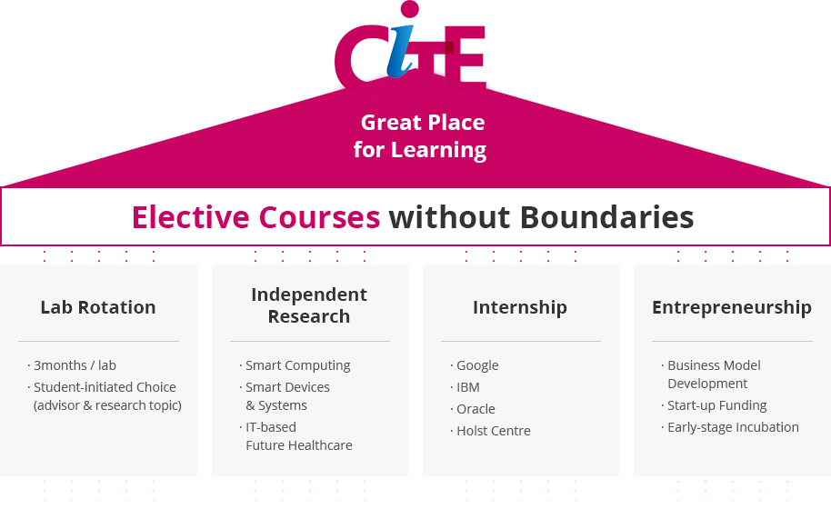

@@include('sub_visual.html',{
"title" : "대학원",
"type" : "type3",
"sub_menu" : "교육"
})
@@include('../inc/tab.html',{
"has_tab" : true,
"tab_list" : ["개요","교과목 일람표","학위","Q.E","학생지원","대학원 프로그램","졸업"],
"type" : "type7"
})
교육목표

cite, great place for learning
elective courses without boundaries
- Lab Rotation
- 3months / lab
- Student-initiated Choice (advisor & research topic)
- Independent Research
- Smart Computing
- Smart Devices & Systems
- IT-based Future Healthcare
- Internship
- Google
- IBM
- Oracle
- Holst Centre
- Entrepreneurship
- Business Model Development
- Start-up Funding
- Early-stage Incubation
- 다양한 분야의 폭넓은 전공학점 인정
- 창의력과 융합적 사고력 배양을 위한 특화 교과목 운영
- 다양한 기술경영 교과목 운영